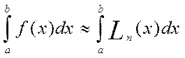
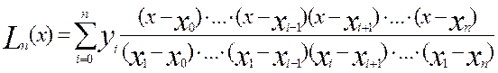

(1)
(1) Але в багатьох випадках не вдається знайти первісну функція F(x) за допомогою елементарних операцій, або процедура інтегрування виявляється занадто складною. Внаслідок цього, процес обчислення визначеного інтеграла за формулою (1) стає занадто громіздким, або його й взагалі не можна виконати.
Також, на практиці підінтегральна функція f(x) досить часто визначається таблично і, внаслідок цього, саме поняття первісної втрачає зміст. У таких випадках використовують чисельні методи інтегрування, суть яких полягає в обчисленні значення визначеного інтеграла з використанням ряду значень підінтегральної функції та її похідних у скінченій кількості точок, що переважно належать проміжку інтегрування. Такі формули обчислення наближеного значення визначених інтегралів називають формулами механічних квадратур або квадратурними формулами.
Поширений прийом побудови квадратурних формул ґрунтується на заміні підінтегральної функції на відрізку інтегрування інтерполяційними або апроксимуючим многочленом. Внаслідок виконання такої операції, отримуємо рівність
,
де - помилка квадратурної формули (залишковий член). Знехтуємо залишковим членом і перепишемо останню рівність так:
 (2)
Описаний підхід приводить до алгоритмів, які легко реалізуються за допомогою ЕОМ. При цьому, результат отримуємо з досить високою точністю.
Нехай многочлен із формули (2) – це відомий інтерполяційний поліном Лагранжа. Для його побудови необхідно розбити розбити відрізок інтегрування на n частин точками а=(точки розбиття ще називають вузлами розбиття). Скористаємося відомою формулою полінома Лагранжа

і підставимо її в праву частину рівності (2). Отримаємо
 Отже, формулу (2) можна переписати так:
Отже, формулу (2) можна переписати так:(3)
де
Аналізуючи отримані рівності, робимо такі висновки: